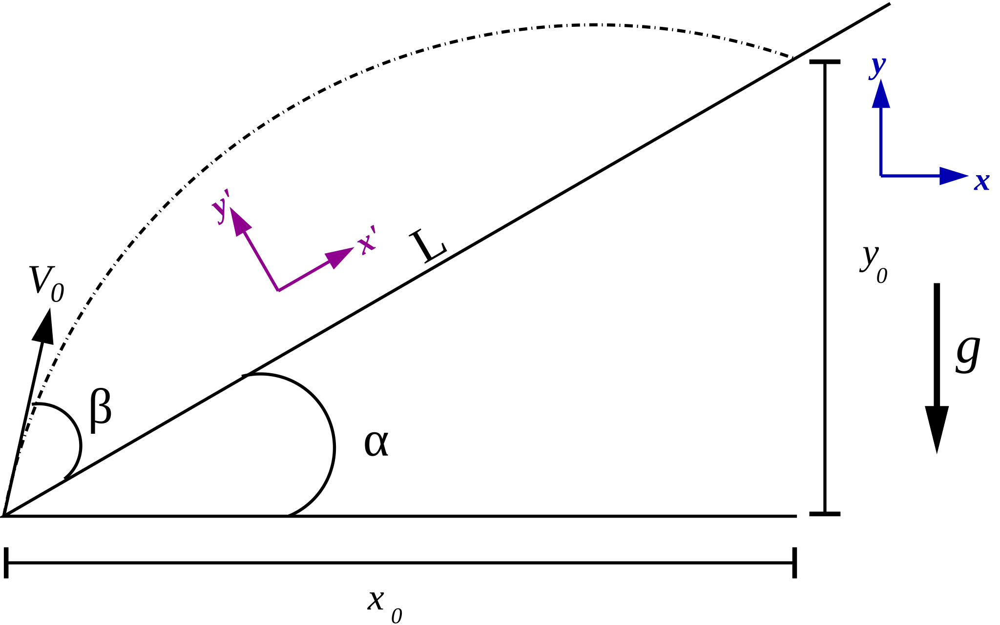
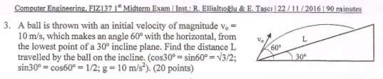
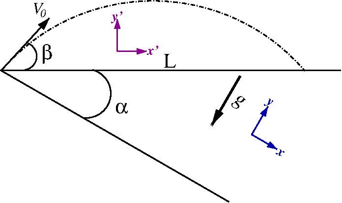
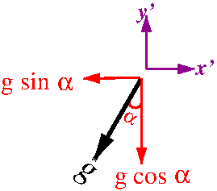
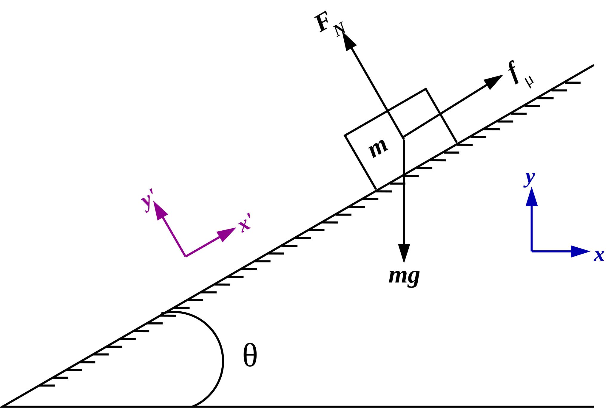

Lineer Cebir Uygulamaları (I)#
Ders Notları: 6#
Lineer Cebir Uygulamaları & Grafik Çizimi (I)
1. Eğik Düzleme Atılan Eğik Atış Problemi
Hazır elimiz değmişken, çizdirelim de bari…
Soru #1
Sonuç
Son söz
Soru #2
2. Sürtünmeli Eğik Düzlemde Kayan Kütle
Soru #3
Sonuç
Welcome to Sadet…
Kısa bir ara
Soru #4
Son söz
Dr. Emre S. Taşcı, emre.tasci@hacettepe.edu.tr
Fizik Mühendisliği Bölümü
Hacettepe Üniversitesi
1. Eğik Düzleme Atılan Eğik Atış Problemi#
(Neden?) 
Yatayla \(\alpha\) açısı yapan bir eğik düzlemin dibinden, eğik düzleme göre \(\beta\) açısı ve \(V_0\) ilk hızıyla atılan bir cismin uçuş zamanını (\(t_0\)) ve eğik düzlem üzerine düştüğü yerin atış noktasına olan uzaklığını (\(L\)) bulunuz.
Bu soruyu, 2016 yılında, bilgisayar mühendisliği bölümüne, FIZ137 - Fizik I dersinin 1. ara sınavında sormuşuz (Recai Hoca’yla):

Çözüm
En genel haliyle (sorumuzdan bağımsız olarak), \(V_0\) ilk hızıyla, yatayla \(\theta\) açısı yapacak şekilde atılan bir cismin \(t_0\) anındaki konumunu veren hareket denklemlerini yazarak başlayalım: $\(x_0 = V_0\cos\theta\, t_0 + \frac{1}{2}\ddot{x}\,t_0^2\quad(1)\\ y_0 = V_0\sin\theta\, t_0 + \frac{1}{2}\ddot{y}\,t_0^2\quad(2)\)$
Rutin Koordinatlar
Bizim durumumuzda, soruya özel olarak, şu bilgiler elimizde:
Bunları kullanarak:
\(t_0\)’ı yalnız bırakıp trigonometrik eşitlikleri çalıştıralım:
Artık elimizde \(t_0\) olduğuna göre, önce \(x_0\)’ı:
\(x_0\)’ı kullanarak da \((**)\) eşitliğinden -nihayet- \(L\)’yi bulabiliriz:
# Sorudaki değerleri yerine koyarsak:
import numpy as np
alpha = np.deg2rad(30) # derece -> radyan
beta = np.deg2rad(30) # derece -> radyan
V0 = 10 # m/s
g = 9.8 # m/s^2
t0 = (2*V0/g)*(np.sin(beta)/np.cos(alpha))
print("t0 = ",t0,"s")
#x0 = (2*V0**2/g)*(np.cos(alpha+beta)*np.sin(beta)/np.cos(alpha))
#print("x0 = ",x0," m")
L = (2*V0**2/g)*(np.cos(alpha+beta)*np.sin(beta)/np.cos(alpha)**2)
print(" L = ",L," m")
t0 = 1.178265855489032 s
L = 6.802721088435373 m
’Normal’ Koordinatlar
Böyle çözünce size de biraz karışık gelmiyor mu? Bence çözmeden önce birazcık kafamızı çalıştırıp, daha “uygun” bir koordinat sistemi kullanalım: sorumuzun çiziminde morla işaretlenmiş olan, \(x'\)nün eğik düzlemle paralel olduğu \((x',y')\) koordinat takımını. Bunun için de sistemimizi \(\alpha\) kadar döndürüyoruz:

Bu yeni koordinat sisteminde, yerçekimi ivmesinin yeni eksenlere göre bileşenleri şu şekilde olacaktır:

\((1)\) ve \((2)\) genel hareket denklemlerini bu eksenler için yazmak için, bu koordinat sistemindeki özel durumları listeleyelim:
Bunları kullanarak:
[Bu noktada, yukarıdaki koordinat sisteminde bu aşamaya gelene kadar nelerle uğraştığımıza tekrardan bir bakmanızı rica ediyorum 8]
\(L\)’yi de hesaplayalım:
Hazır elimiz değmişken, çizdirelim de bari…#
import numpy as np
import matplotlib.pyplot as plt
alpha = np.deg2rad(30) # derece -> radyan
beta = np.deg2rad(30) # derece -> radyan
V0 = 10 # m/s
g = 9.81 # m/s^2
t0 = (2*V0/g)*(np.sin(beta)/np.cos(alpha))
t = np.linspace(0,t0,10)
x = V0*np.cos(alpha+beta)*t
y = V0*np.sin(alpha+beta)*t - 0.5*g*t**2
plt.plot(x,y,"o-b")
plt.xlabel("x (m)")
plt.ylabel("y (m)")
plt.title("Rutin Koordinatlar")
#plt.xlim(0,8)
#plt.ylim(0,10)
plt.show()
import numpy as np
import matplotlib.pyplot as plt
alpha = np.deg2rad(30) # derece -> radyan
beta = np.deg2rad(30) # derece -> radyan
V0 = 10 # m/s
g = 9.81 # m/s^2
t0 = (2*V0/g)*(np.sin(beta)/np.cos(alpha))
t = np.linspace(0,t0,10)
xp = V0*np.cos(beta)*t - 0.5*g*np.sin(alpha)*t**2
yp = V0*np.sin(beta)*t - 0.5*g*np.cos(alpha)*t**2
plt.plot(xp,yp,"o-m")
plt.xlabel("x' (m)")
plt.ylabel("y' (m)")
plt.title("'Normal' Koordinatlar")
plt.show()
Soru #1#
Ölçeği ayarlayıp, iki grafikteki yayı aynı uzunluğa getirin.
Sonuç#
Amerikalıların “ha öyle, ha böyle…” anlamına gelen bir deyimleri var (tom-ay-to/to-mah-to – Gershwin’in şarkısının Fitzgerald & Armstrong tarafından yapılan müthiş yorumu içinse buyrunuz…). Sonuçta biz de sadece kafamızı çevirmekle, işlemlerin bazılarını kolaylaştırsak da, kafamızı döndürmek suretiyle evrensel yasalara müdahale edemediğimizden, atılan cisim, iki referans çerçevesinde de (görelilikle beraber, koordinat sistemi takımlarına “referans çerçevesi” gibi âfili isimler takmaktayız ;) aynı sürede havada kalıp, eğik düzlemin aynı yerine düştü, klasik fizikte bu zaten beklenen şeydi.
İki sistemdeki sonuçlarımızı özetlersek:
Acaba \((x,y)\) setimize ne yaptık da \((x',y')\)deki değerlere dönüştüler? Hatırladım, eksenleri döndürmüştük… O halde, dönüş matrisimizi ezberden bir tanımlayalım, bakalım ne olacak:
import numpy as np
alpha = np.deg2rad(30) # derece -> radyan
R_alpha = np.array([[np.cos(alpha),np.sin(alpha)],[-np.sin(alpha),np.cos(alpha)]])
x = np.array([[5.8853],[3.3979]])
xp = np.dot(R_alpha,x)
print(xp)
[[6.79576931e+00]
[1.77195191e-05]]
Yani:
Son söz#
Demek ki, istesek tâ en başından bu çevrimi (ya da tersini) yapabilirmişiz:
import numpy as np
import matplotlib.pyplot as plt
alpha = np.deg2rad(30) # derece -> radyan
beta = np.deg2rad(30) # derece -> radyan
V0 = 10 # m/s
g = 9.8 # m/s^2
t0 = (2*V0/g)*(np.sin(beta)/np.cos(alpha))
t = np.linspace(0,t0,10)
# Rutin Koordinatlar
x = V0*np.cos(alpha+beta)*t
y = V0*np.sin(alpha+beta)*t - 0.5*g*t**2
xy = np.array([x,y])
# Dönüş matrisimiz
R_alpha = np.array([[np.cos(alpha),np.sin(alpha)],[-np.sin(alpha),np.cos(alpha)]])
# Rutin Koordinatlar -> 'Normal' Koordinatlar
xpyp=np.dot(R_alpha,xy)
plt.plot(xpyp[0,:],xpyp[1,:],"o-b")
#plt.xlabel("x'=R.xy0,: (m)")
#plt.ylabel("y'=R.xy1,: (m)")
plt.title("Rutin->'Normal' Koordinatlar")
#plt.xlim(0,8)
#plt.ylim(0,4)
plt.show()
xy.T
array([[0. , 0. ],
[0.65459214, 1.04980264],
[1.30918428, 1.93163685],
[1.96377643, 2.64550265],
[2.61836857, 3.19140002],
[3.27296071, 3.56932897],
[3.92755285, 3.77928949],
[4.58214499, 3.8212816 ],
[5.23673714, 3.69530528],
[5.89132928, 3.40136054]])
Soru #2#
Bizim bildiğimiz -saatin tersi yönünde döndüren- dönüş matrisi:
şeklinde değil miydi (yani “\(-\sin\alpha\)” sağ üstte; “\(\sin\alpha\)” sol altta olacak şekilde)?
Ama sistemimizi saatin tersi yönünde döndürmemize rağmen, neden yukarıda işlemi yaparken “\(-\sin\alpha\)”yı sol altta, “\(\sin\alpha\)”yı sağ üstte aldık?… (Açıklayın)
2. Sürtünmeli Eğik Düzlemde Kayan Kütle#
(Nasıl?) 
İkinci örneğimizden herkese merhabalar! Soru (normal kuvveti ve cismin eğik düzlem üzerindeki L mesafeyi ne kadar sürede kat edeceğini hesaplayın: \(\theta=30^o;\,\mu=0.2;\,m=1.2\,kg;\,L=100\,m;\,g=9.81\,m/s^2\)) çok klasik, o kadar klasik ki, bilinçaltınızda çözmeye başladınız bile – hatta durun an itibarı ile aklınızdan ne yaptığınızı da söyleyeyim: \(mg\) ağırlığını \(F_N\) normal kuvvet ve \(f_\mu\) sürtünme kuvveti yönlerinde bileşenlerine ayırıyorsunuz!..
Rutin Koordinatlar:
Ama ayırmayalım hemen; öyle, körlemesine dalalım probleme, “vardır bir hikmeti” deyip, alışılageldik, yere paralel x-ekseni ve ona \(90^o\) yukarı uzanan y-ekseninden oluşan klasik koordinat takımımızı kullanıp, \(F_N\) ile \(f_\mu\)’yü bu eksenlerdeki bileşenlerine ayırıp, Newton’ın 2. yasasını tatbik edelim:
x-ekseni boyunca kuvvetler:
\(f_\mu\cos\theta -F_N\sin\theta = m\ddot{x}\quad(1)\)
y-ekseni boyunca kuvvetler:
\(f_\mu\sin\theta + F_N\cos\theta - mg = m\ddot{y}\quad(2)\)
Seçtiğimiz koordinat sistemine dair bağıntı:
\(\tan\theta = \frac{y}{x} \rightarrow y = x\tan\theta \Rightarrow \ddot{y} = \ddot{x}\tan\theta\quad(3)\)
Genel olarak bildiğimiz:
\(f_\mu = \mu F_N\quad(4)\)
\((4)\)’ü \((1)\) ve \((2)\)’de yerine yazalım:
Bu üç bilinmeyenli \((\ddot{x},\ddot{y},F_N)\) üç denklemimizi \((1'),(2'),(3')\), matris - vektör çarpımı olarak yazabiliriz:
Bu lineer sistemi nasıl çözebileceğimizi biliyoruz (değil mi? ;)
import numpy as np
# Soruda verilenler:
theta = np.deg2rad(30) # derece -> radyan
mu = 0.2
m = 1.2 # kg
L = 100 # m
g = 9.81 # m/s^2
A = np.array([[m,0,np.sin(theta)-mu*np.cos(theta)],
[0,-m,np.cos(theta)+mu*np.sin(theta)],
[np.tan(theta),-1,0]])
b = np.array([0,m*g,0])
s = np.linalg.solve(A,b)
print(s)
[-2.77635461 -1.60292908 10.19485105]
Yani:
(ivmelerin negatif olması, sola ve aşağı doğru ivmelendiğini, yani yönünü gösteriyor).
Eğik düzlemdeki \(L\) mesafesini ne kadar zamanda kat edeceğine gelince:
t0 = (np.sqrt(2*L*np.cos(theta)/np.abs(s[0])))
print("t0: ",t0,"s")
t0: 7.898467695302089 s
’Normal’ Koordinatlar
Bir de, bize mantıklı gelen koordinat sistemi olan \((x',y')\) üzerinden gidelim: Ne de olsa bir öncekinde hem normal kuvveti, hem de sürtünme kuvvetini bileşenlerine ayırmak zorunda kalmıştık, burada sadece ağırlığı bileşenlere ayıracağız; \(y\) ekseni yönünde herhangi bir yerdeğiştirme olmaması da cabası! \((\ddot{y}' = 0)\)
x’-ekseni boyunca kuvvetler:
\(f_\mu - mg\sin\theta = m\ddot{x}'\quad(1)\)
y’-ekseni boyunca kuvvetler:
\(F_N - mg\cos\theta =m\ddot{y}'\quad(2)\)
Seçtiğimiz koordinat sistemine dair bağıntı:
\(\ddot{y}'=0\quad(3)\)
Genel olarak bildiğimiz:
\(f_\mu = \mu F_N\quad(4)\)
Bu denklemleri kullanıp, bu koordinat sisteminde hareket denklemlerimizi lineer denklem seti olarak temsil edersek:
Soru #3#
En alt satırın orta sütunundaki “227” değeri nereden geldi? Dersimizin koduyla aynı oluşu tesadüf mü?
Çözüme geçersek:
import numpy as np
# Soruda verilenler:
theta = np.deg2rad(30) # derece -> radyan
mu = 0.2
m = 1.2 # kg
L = 100 # m
g = 9.81 # m/s^2
A = np.array([[m,0,-mu],[0,m,-1],[0,227,0]])
b = np.array([-m*g*np.sin(theta),-m*g*np.cos(theta),0])
su = np.linalg.solve(A,b)
print(su)
[-3.20585816 0. 10.19485105]
Yani:
Eğik düzlemdeki \(L\) mesafesini ne kadar zamanda kat edeceğine gelince:
t0 = (np.sqrt(2*L/np.abs(su[0])))
print("t0: ",t0,"s")
t0: 7.898467695302089 s
Sonuç#
Yine şaşırtıcı olmayan bir biçimde, bizim seçtiğimiz koordinatlardan bağımsız olarak cismin üzerine binen normal kuvvet de, verilen mesafeyi kat ettiği zaman da iki referans çerçevesinde aynı çıktı.
İlk sorudan sonra, birinden diğerine \((\ddot{x},\ddot{y})\leftrightarrow(\ddot{x}',\ddot{y}')\) nasıl geçebileceğimizi artık tahmin edebilirsiniz:
Hemen bir teyit alalım:
import numpy as np
theta = np.deg2rad(30)
xydd = np.array([-2.77635461, -1.60292908])
R_theta = np.array([[np.cos(theta),np.sin(theta)],[-np.sin(theta),np.cos(theta)]])
xyddpp = np.dot(R_theta,xydd)
print(xyddpp)
[-3.20585816e+00 1.25518085e-09]
Welcome to Sadet… (popülasyon 2i+3 \(\in \mathbb{C}\))#
Sadede gelirsek, görünürde bu ikinci örnekte ilk örneği biraz(!) daha geliştirdik, bilgimizi pekiştirdik ama aslında iki örnek birbirinden çok farklı (en büyük farkları da 1. örneği matris-vektör çarpımı şeklinde yazamamızda çünkü orada aktif olarak rol oynayan zaman ve/veya onu aradan çıkarıp x ile y değişkenlerinin aralarındaki bağıntı doğrusal değil, 2. dereceden (quadratic): hal böyle olunca pirincin taşını ayıklayamıyoruz maalesef (yine aynı nedenden ötürü oturup soruyu ellerimizle çözdük (başka (bir dolu) sayısal yaklaşımla tabii ki çözebiliriz ama lineer cebrin dışına çıkmış olurduk o zaman)). Bu soruda ise her şey gayet net:
Biz dan-dan-dan çözerken, arka planda, belki de farkına bile varmadan neler yaptığımıza gelirsek: koordinat dönüşümünü \((\ddot{x},\ddot{y})\)’ye nasıl etki ettirip, \((\ddot{x}',\ddot{y}')\) gidebileceğimizi gördük:
Boyut uyumu açısından \(F_N\)’i de değişmeyecek şekilde ekleyelim:
Bu yukarıdaki işlem aslında gayet ciddi bir matris eşitliği, sembolik olarak şöyle bir şey:
İki tarafı da soldan, matrisimizin tersi \(A^{-1}\) ile çarparsak:
\((\ddot{x},\ddot{y})\)’den \((\ddot{x}',\ddot{y}')\)’ye gidebiliyorduk, artık \((\ddot{x}',\ddot{y}')\)’den \((\ddot{x},\ddot{y})\)’ye de gidebiliyoruz bu sayede! Bu iş için dönüş matrisimizin tersini bilmek gerekiyor. Dilerseniz bilgisayara hesaplatabilirsiniz (R_inv = np.linalg.inv(R)) ama kafamızı kullanmak daha iyi: eğer eksenlerimi saatin tersi yönünde \(\theta\) açısı kadar döndürmek için:
matrisini kullanıyorsam, geri gelmek için (yani işlemi “tersine” almak için), bu sefer saat yönünde \(\theta\) kadar gitmeliyim: bir başka deyişle, \(-\theta\) kadar dönüş yapmalıyım. Kosinüs çift fonksiyon olduğu için, \(\theta\) yerine \(-\theta\) yazdığımda bir şey değişmeyecek \((\cos(-\theta) = \cos(\theta))\) ama sinüs tek fonksiyon olduğundan, işaretler değişecek \((\sin(-\theta) = -\sin(\theta))\). Demek ki:
Bunu da (**) eşitliğinin iki yanına soldan etki ettirdiğimizde:
(*) eşitliğinde \(\begin{pmatrix}\ddot{x}\\\ddot{y}\end{pmatrix}\) gördüğümüz yere bunu yazalım:
Kısa bir ara
İşimiz neredeyse bitiyor, çok az kaldı. Özdeğer ve özvektörlerde hatırlıyorsanız, köşegenleştirme yapıyorduk, yani [ozdegerler,ozvektorler] = np.linalg.eig(A) dediğimizde, örneğin:
A = np.array([[2.,3.],[4.,5.]])
print(A)
print()
[ozdegerler,ozvektorler] = np.linalg.eig(A)
print("Özdeğerler: ",ozdegerler,"\n-----\nÖzvektörler:\n",ozvektorler)
[[2. 3.]
[4. 5.]]
Özdeğerler: [-0.27491722 7.27491722]
-----
Özvektörler:
[[-0.79681209 -0.49436913]
[ 0.60422718 -0.86925207]]
Özdeğerler köşegenleştirilmiş matris \((D)\), özvektör matrisi de (\(u\)) olarak alındığında, \(u\cdot D \cdot u^{-1} = A\) eşitliği gerçeklenir. Devam edersek:
D = np.diag(ozdegerler)
print("D:",D)
u = ozvektorler.copy()
print("u:",u)
u_inv = np.linalg.inv(u)
print("u.D.u^{-1} = ",np.linalg.multi_dot((u,D,u_inv)))
D: [[-0.27491722 0. ]
[ 0. 7.27491722]]
u: [[-0.79681209 -0.49436913]
[ 0.60422718 -0.86925207]]
u.D.u^{-1} = [[2. 3.]
[4. 5.]]
Şimdi tekrar örneğimize geri dönelim, nerede kalmıştık?
Bu, kesinlikle bir özdeğer denklemi değil – soldaki vektör ile sağdaki vektör bambaşka. Ama yine de hazır iki matris, bir de vektör çarpımı bulmuşken,
matrisine \(u^{-1}\) muamelesi çekelim, eşitliğin iki yanını da soldan bunun tersi ile çarpalım:
Sağ taraftaki çarpımı kafadan yapabilirim ama sol taraftaki çarpımı kaldırmaya kalbim yetmez. Neyse, hele bir sağ tarafı halledelim, sola da döneriz elbet:
Sayısal olarak da olsa, elimizdeki değerlerle sol tarafı yapalım:
print("m:",m,"\tmu:",mu,"\ttheta:",np.rad2deg(theta))
u = np.array([[np.cos(theta),np.sin(theta),0],[-np.sin(theta),np.cos(theta),0],[0,0,1]])
u_inv = np.linalg.inv(u)
A = np.array([[m,0,np.sin(theta)-mu*np.cos(theta)],[0,-m,np.cos(theta)+mu*np.sin(theta)],[np.tan(theta),-1,0]])
Q = np.linalg.multi_dot((u,A,u_inv))
print()
print(Q)
m: 1.2 mu: 0.2 theta: 29.999999999999996
[[ 6.00000000e-01 -1.03923048e+00 7.66025404e-01]
[-1.03923048e+00 -6.00000000e-01 6.73205081e-01]
[ 1.11022302e-16 -1.15470054e+00 0.00000000e+00]]
\((\ddot{x}',\ddot{y}',F_N)\) değerlerini yukarıda hesaplamıştık (su) olarak. Q matrisimizle \((\ddot{x}',\ddot{y}',F_N)\) vektörünü çarpıp, sonucu kontrol edelim:
print(" su:",su)
print("Q.su:",np.dot(Q,su))
print(m*g*np.sin(theta),m*g*np.cos(theta),0)
su: [-3.20585816 0. 10.19485105]
Q.su: [ 5.88600000e+00 1.01948511e+01 -3.55921754e-16]
5.885999999999999 10.194851053350412 0
Bir de bizim o zaman bulmuş olduğumuz değerlerle kıyaslayalım:
K=np.array([[m,0,-mu],[0,m,-1],[0, 227,0]])
print(K)
print(np.dot(K,su))
[[ 1.20e+00 0.00e+00 -2.00e-01]
[ 0.00e+00 1.20e+00 -1.00e+00]
[ 0.00e+00 2.27e+02 0.00e+00]]
[ -5.886 -10.19485105 0. ]
Soru #4#
Denklemler birbirlerinin “-” ile çarpılmışına eşit – bu sorun olur mu?
Son söz#
İşin özü, koordinat dönüşümüyle sadece “koordinatları” değil, bütün denklemleri dönüştürüyor olmamız.